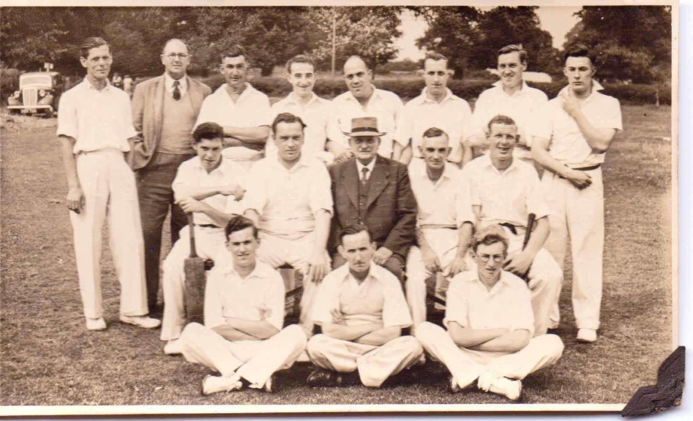
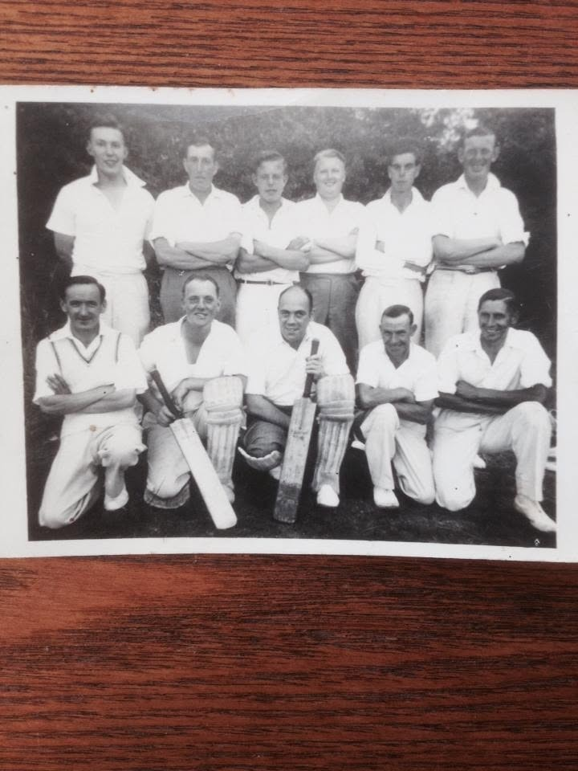
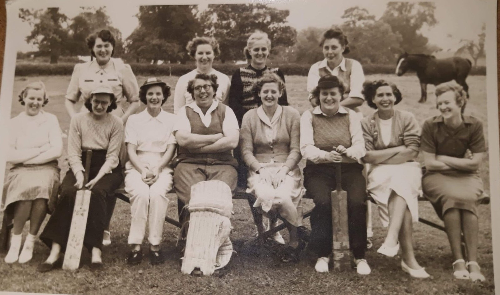

1832
An early recorded Sutton v Mepal match; Mepal won by 13 runs.
Celebrating generations of players, volunteers, families and supporters who have made cricket part of village life in Sutton, Cambridgeshire.
Our anniversary
Sutton Cricket Club traditionally dates its foundation to 1877, the year shown on the club badge. The 2027 season therefore marks the club's 150th anniversary. Newspaper research also records cricket involving Sutton as early as 1832. Those earlier matches are part of the village's cricket story, although a continuous link to the present club has not yet been established.
From old grounds and pavilions to Saturday league cricket, women's teams, junior coaching and community events, the club's story belongs to everyone who has been involved.
Explore the full historical timeline →
An early recorded Sutton v Mepal match; Mepal won by 13 runs.
The club's traditional founding year, proudly retained on its badge.
Our 150th anniversary season — an opportunity to celebrate and preserve club memories.
The people behind the club



Read about past Presidents and Chairmen → · View these historic photographs →
On and off the pitch
Discover how a former pavilion was damaged and how Stan Darby helped the club with a replacement.
Pavilion history →Sutton won the trophy in 2021 and 2023 and shared it in 2025 following a rain-abandoned final.
Trophy history →Explore outstanding performances and the people recognised for their contribution to Sutton CC.
Honours → · Awards →Browse 40 photographs of teams, matches, the ground and club life.
Explore the collection →Looking ahead
We are looking forward to marking 150 years of Sutton Cricket Club with the people who have shaped its history. Details of anniversary events and any celebration dinner will be shared once confirmed.
Event details to follow. Dates, venue, tickets and arrangements have not yet been announced.
Help preserve our story
We would love to hear from former players, families, volunteers and supporters. Old photographs, scorebooks, newspaper cuttings, team lists, names, dates and stories can all help us build a fuller record for future generations.